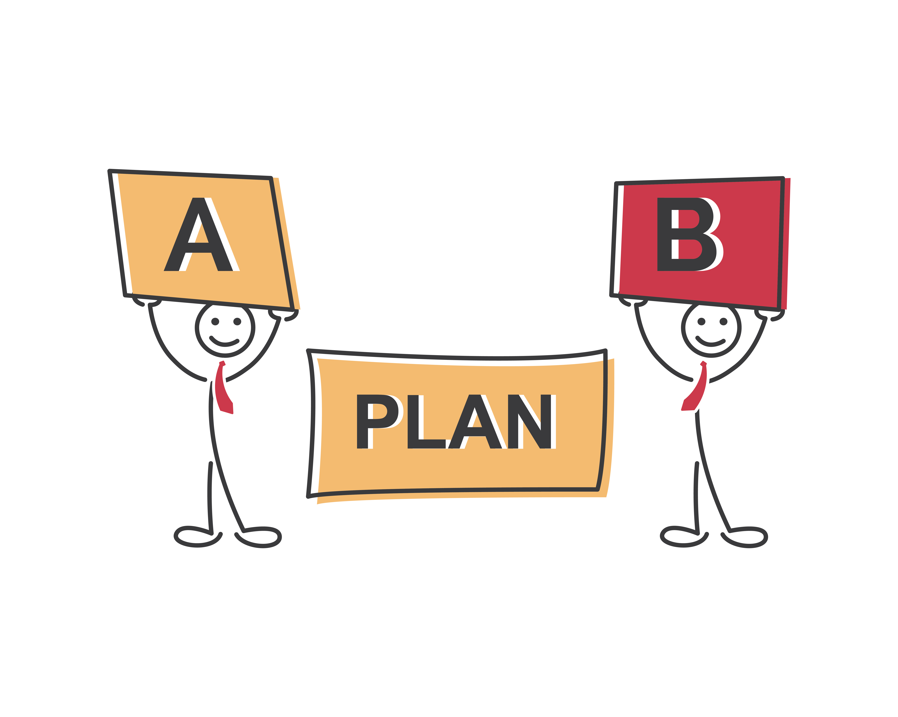

Student Engagement
in Remote Learning

Daily & Consistent Contactmore_vert
Daily & Consistent Contactclose
arrow_forward
Create and communicate a daily schedule with times - easily printable for parents so they can help get students in the right place at the right time
arrow_forward
Establish a scheduled/predictable weekly communication to families, so they know when to look for information from you. Keep it simple!
arrow_forward
Establish and communicate your method of communication when a student is meeting/not meeting expectations
Resources
Remote Learning Resources in Beyond Textbooks

Preparednessmore_vert
Preparednessclose
arrow_forward
Create and communicate a specific list of what supplies are needed. Try to keep it as consistent as possible.
arrow_forward
Technology issues happen for you and for your students, so be ready with a Plan B, and communicate the plan for when tech doesn’t work.
arrow_forward
Create a plan for how students can get tech support, for ex: Tech Support Hotline, phone call, email, etc.
Resources
Remote Learning Resources in Beyond Textbooks
Concrete Expectationsmore_vert
Concrete Expectationsclose
arrow_forward
Create opportunities for students to overtly respond to you during a conference - statistics say students should actively respond every 90 seconds. Remember their focus time is the same as their age.
arrow_forward
Create a system to positively reinforce and acknowledge engagement and to reduce lack of engagement. The best way to drive behavior is with positive reinforcement. What can you do to inspire students to engage?
arrow_forward
It is easier for students to understand expectations when there is consistency across: site, grade level, team, etc.
Resources
Remote Learning Resources in Beyond Textbooks
Supports & Connectionsmore_vert
Supports & Connectionsclose
arrow_forward
Increase students’ connection to school and class by creating Culture Boosting Activities: site and class. Examples includes ice breakers, spirit week, themes, etc.
arrow_forward
Create a survey to determine Well Being Check-In Component
arrow_forward
Replicate the benefits that students receive from their relationship with you and with their classmates by integrating Social Emotional Learning (SEL) components integrated into remote learning.